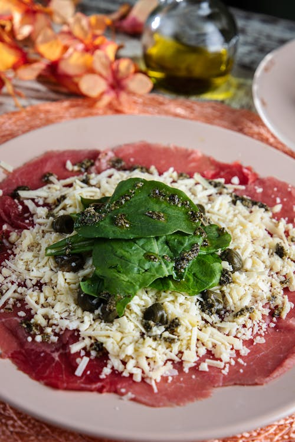
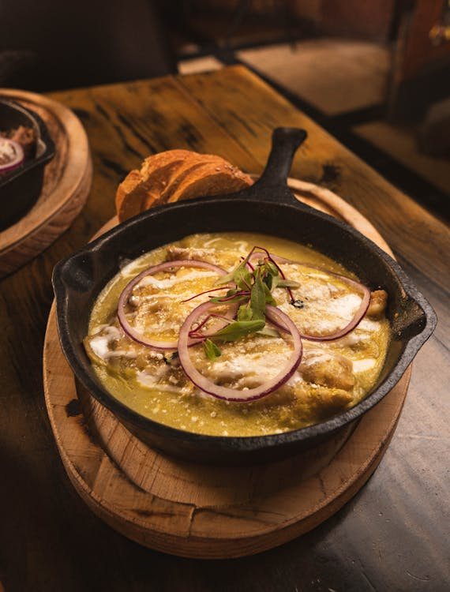
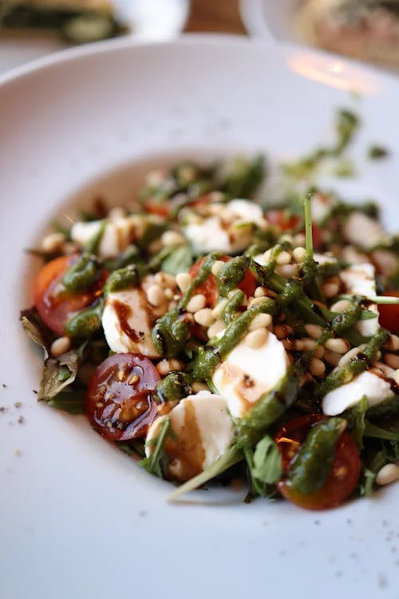
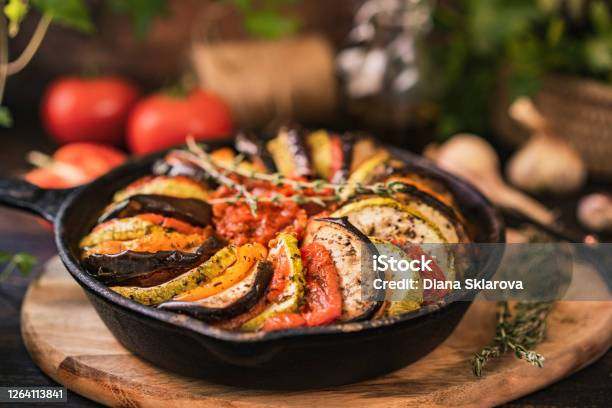
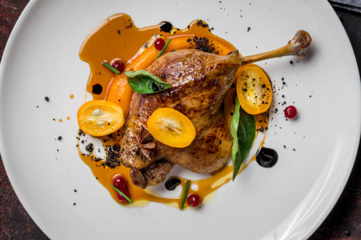
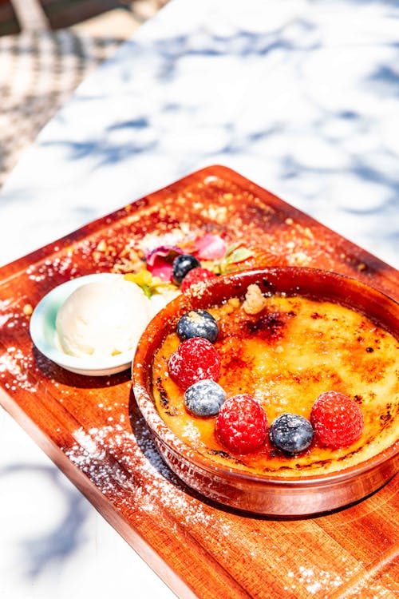
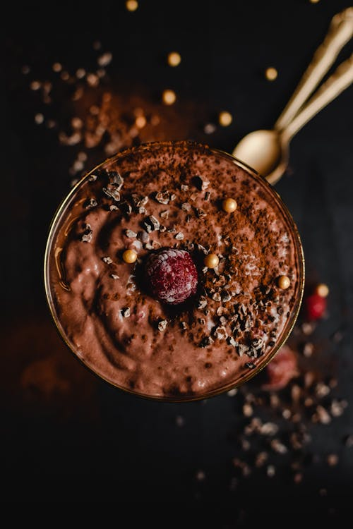
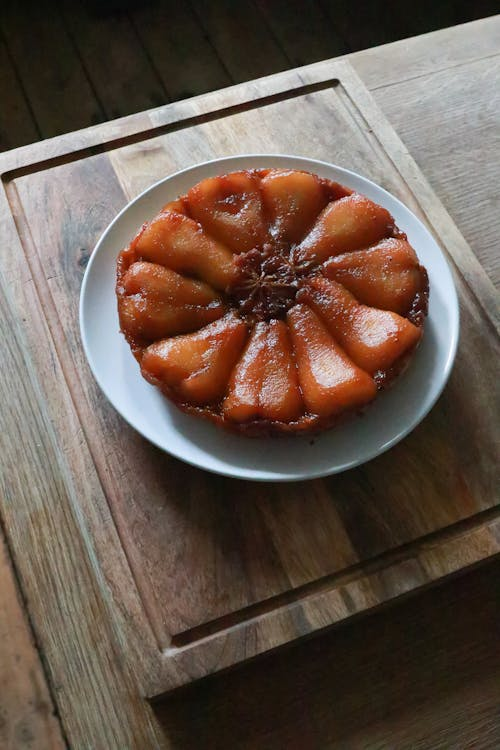

Menu Degustação
Entradas:

-
Carpaccio de Salmão Defumado: Fatias finas de salmão defumado com alcaparras, azeite extra virgem e limão siciliano.
R$ 32,00

-
Sopa de Cebola Gratinada: Tradicional sopa francesa à base de caldo de carne, cebola caramelizada, croutons e queijo gratinado.
R$ 28,00

-
Salada Niçoise: Salada verde com atum, ovo cozido, tomate, azeitonas pretas e vinagrete de anchova
R$ 25,00
Pratos Principais:

-
Coq au Vin: Frango cozido em vinho tinto com bacon, cogumelos e cebola. Servido com purê de batatas.
R$ 45,00

-
Ratatouille: Legumes provençais refogados em azeite, incluindo berinjela, abobrinha, tomate, pimentão e cebola. Servido com arroz branco
R$ 38,00

-
Confit de Canard:Coxa de pato confitada lentamente em gordura de pato, servida com batatas assadas e molho de laranja.
R$ 52,00
Sobremesas:

-
Crème Brûlée: Creme de leite com cobertura caramelizada crocante.
R$ 22,00

-
Mousse de Chocolate: Mousse leve e cremosa de chocolate belga.
R$ 20,00

-
Tarte Tatin: Torta francesa de maçã invertida com massa folhada crocante.
R$ 25,00
Observações:
Este é apenas um menu de degustação. O menu completo do restaurante Le Chat Noir pode variar.
Os preços estão sujeitos a alteração.
Esperamos que você tenha uma experiência gastronômica deliciosa no Le Chat Noir!